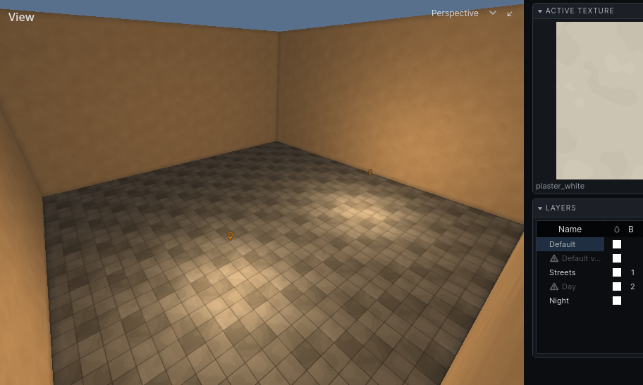

Variants
A variant is one state of a map: the same streets by day and by night, a corridor before and after it collapses. One map holds all of them.
How to make and switch variants: Layers.
How a variant works
A variant is a layer marked as a variant. What is on it, and on the layers inside it, exists only in that variant.
- A layer in no variant is in every variant: the parts of the level that never change.
- Sibling variants are alternatives: Day or Night.
- A variant inside another refines it. Making the inner one active brings the outer one's contents too: Night, then Night with the gate open.
- Every map has a Default variant. It is in effect until something asks for another, and it cannot be removed.

What "not in the active variant" means
Something in another variant is not in the world, not merely hidden:
- A room does not carve, a solid does not fill.
- It is not drawn, collided with, baked, lit, heard or walked on.
- It cannot be picked in the editor.
A brush entity's brushes go with the entity: a door in another variant takes its leaf along.
Use variants for changes to the level itself. To tidy the view while you work, hide a layer instead: hiding changes nothing in the world.
Each variant has its own bake
- A bake lights the variant in effect and is kept as that variant's lighting.
- Switching variants puts that variant's lighting on the map. A variant never baked is unlit.
- Bake all variants in the lightmap tool bakes, in turn, every variant that no other variant refines. A variant that others refine is baked when it is the one in effect.
- Data other addons bake into the map, such as the audio graph, is also kept per variant.
Each variant can have its own sky
A variant can have a sky of its own, set in the Sky tool. One without takes the sky of the variant it sits inside, and in the end the default variant's.
Which variant the game shows
Hammerite knows variants only by layer name. Which one a game state means, and when to switch, is your game's.